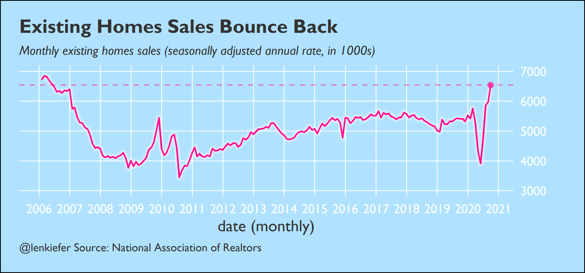

We are entering the homestretch for 2020, with just about two months left. It has been an intense year, with many twists and turns. Given all the uncertainty many people have been asking me to share my perspective on the outlook for US housing and mortgage markets. I’ve given many talks, in this article I’m laying out the basic view that forms the core of my recent presentations.
The COVID-19 pandemic and the associated recession are of course the dominant drivers of the outlook. Infection rates are once again rising in the US and there is tremendous concern that we are seeing a new wave both in the United States and around the world. However, despite the significant challenges facing the US economy the housing market has held up remarkably well, particularly the owner-occupied segment of the economy, which makes up about 2/3 of all households.
Why the US housing market has held up
There are three major reasons why the housing market has held up in 2020.
First, low mortgage interest rates provide a significant lift to housing markets.
Second, while there are still elevated levels of unemployment, the brunt of the Coronavirus recession has not (yet) hit owner households. The direct effects of the pandemic and associated shutdowns have primarily hit the renter population. In addition, there has been significant support for US housing markets beyond low interest rates in the form of forbearance programs and foreclosure moratoria, which have prevented any fire sales that would lead to possible house price declines.
Third, there has been a strong undercurrent of housing demand, driven primarily by demographic forces (the aging Millennial generation, who are entering peak homebuying years), but also possibly accelerated by a shift in preference toward single-family housing and away from apartments and condos in dense urban areas.
Remarkably, these forces have helped the housing market rebound strongly, as we’ll examine below.
Detailed analysis of recent trends
In the remainder of this article, I will share with you some charts that I’ve used to help tell the story outlined above.
Low mortgage rates bolster the housing market
Mortgage rates have reached historical lows in 2020. In the week ending October 22, 2020 mortgage rates averaged 2.81%, the lowest weekly average on record. Those low mortgage rates are supporting the US housing market and one of the primary reasons why the housing market has bounced back over summer and into fall 2020.
Home sales recover, but a lack of inventory is a significant challenge
The recovery of home sales has been remarkable, with existing home sales surging in fall well ahead of expectations.

Existing home sales have surged despite low levels of inventory. The number of existing single-family homes available for sale has reached near record lows.
The lack of existing home sales inventory could be partially offset by new homes. New home sales have surged. In September 2020, there were 75,000 new home sales. That’s the highest September total since 2006.
An increasing fraction of new home sales have been taking place ahead of completion of the unit. See for example NAHB: http://eyeonhousing.org/2020/10/new-home-sales-growth-rate-slows-in-september/. Single-family housing starts have surged, but even with the growth the number of units under construction is still short of what we need to match long-run housing demand.

Housing makes up for a lost spring
Home sales transactions have been surging to help make up for a lost spring. In the figure below the black line is the non seasonally adjusted home purchase mortgage applications index. You can clearly see the typical seasonal pattern in the data. The jagged edges represent holidays (Memorial Day, 4th of July, Labor Day, Thanksgiving, etc) when application activity typically slows. There’s also an upward trend of around 10% a year each year (compare the peaks 2017 to 2018 to 2019).
Then in 2020 the market was disrupted. Typically in spring applications rise, but the pandemic led to shutdowns and a sharp contraction in activity. The weekly applications since March 13th are represented in orange, while the pre-pandemic trend line is represented by the blue dotted line. The blue “lake” in the chart represents the transactions “lost” due to the pandemic.
Since about midsummer the orange line has been above the blue line, as the housing market makes up for a lost spring. The pink plateau in the chart represents the weeks when applications were running above their pre-pandemic trend.
For more see my article housing makes up for a lost spring where I discuss the figure below in more detail.
House prices accelerate
With activity surging and for-sale inventory low, there’s tremendous pressure on house prices, which have been accelerating. In fact, house prices are increasing much faster than incomes, rents or other non-housing consumer prices.
If we look back all the way to the 1990s, we see that house prices and per capita income have increased about the same amount cumulatively. But the recent surge in price growth threatens to push house prices well above income. While by itself that doesn’t mean house prices are due to correct, it is a potential warning sign we should keep watching.

The house price acceleration has been broad-based, taking place across all US Census Divisions.
Rebounding purchase demand and surging refinances drive mortgage originations
With interest rates falling so much, mortgage refinance originations have surged. Conventional refinance borrowers in 2020 were able to save about $10,000 on average in net present value (adjusting for refinance origination costs and the possible early prepayment of the mortgage) when they refinance. But there’s still a large number of borrowers who could potentially benefit from refinancing. Looking at the UPB (in $) of outstanding mortgages in 30-year Mortgage Backed Securities in October 2020, we see that as much as 75% of them are in-the-money for a refinance. Using a more conservative threshold requiring market rates to be 1.5 percentage points below outstanding note rates, there’s still well over $1 trillion in potential refinances.
When 2020 is over, we’re likely to see mortgage originations well over $3 trillion for the highest total since the boom market of 2003. In Freddie Mac’s latest forecast, which I help to create, we forecasted that refinance originations will top $2 trillion in 2020 and total single-family originations (purchase + refinance) will be $3.6 trillion, the highest total since 2003.
Challenges remain, but housing is a bright spot
We cannot downplay the risks facing the economy and US housing markets. I am optimistic that the housing market will continue to do well, but there are significant downside risks. But low mortgage interest rates, favorable demographics should set the housing market up to do well if the economy gets back on track.